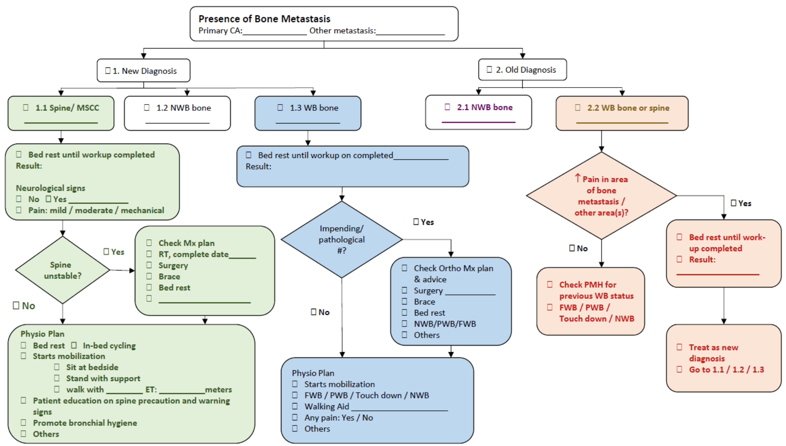

Objectives
Three plain aims sit behind every table and checklist that follows.
Facilitate safe practice
Give physiotherapists a safety-first framework for providing exercise training to patients with bone metastasis.
Support clinical decision
Provide the information needed to design and deliver a relatively safe, individualised exercise programme.
Minimise risk with evidence
Take necessary precautions, grounded in available evidence, to minimise the risk of skeletal-related incidents.
Background
Prescribing exercise for a patient with bone metastasis means holding two true things at once.
Cost of bed rest
Strong evidence supports exercise therapy in counteracting the effects of prolonged bed rest — including pressure injury, reduced muscle strength, fatigue, and impaired physical function.
Fear of fracture
Exercise is often perceived as contraindicated in bone metastases, out of concern for aggravating skeletal-related incidents such as pathological fracture and pain.
The resolution isn't "exercise" vs. "bed rest" — it's risk stratification: score the bone, score the spine, then prescribe accordingly. That's what the next three sections walk through.
Mirels' Classification Scoring System
The most widely used pathological fracture risk stratification tool for known long-bone metastases. Sensitivity 91%, specificity 35% — it's built to catch risk, not to rule it out on its own. Try the calculator with a real case.
Risk calculator
Select the four Mirels' components to see the total score and recommendation update live.
Table 2 — Score, fracture risk, and exercise recommendation
| Mirels' score | Fracture risk | Treatment recommendation | Exercise recommendation |
|---|---|---|---|
| > 9 | 33 – 100% | Prophylactic fixation recommended | Further medical assessment necessary before exercise prescription |
| 8 | 15% | Clinical judgment should be used | Prescribe an individualised exercise plan |
| ≤ 7 | < 4% | Observation and radiation therapy can be used | Prescribe an individualised exercise plan |
What drives spinal instability?
Four factors determine whether a metastatic spine is likely to remain stable under load.
Site of disease
Cervical, thoracic or lumbar. The ribs and chest wall support the thoracic spine — support the cervical and lumbar spine lacks.
Extent of tumour infiltration
Greater vertebral involvement means stability is more likely to be compromised; a collapsed vertebra is less likely to be stable.
Co-morbidity
Pre-existing osteoporosis (age-related or steroid-induced) weakens bone that, once infiltrated by tumour, is even less likely to hold.
Surgery or disease progression
Decompressive surgery alone can alter fixation stability, and non-surgically managed patients can lose stability as disease progresses.
Spinal Instability Neoplastic Score (SINS)
Identifies patients who may benefit from surgical consultation, and doubles as a prognostic tool for surgical decision-making. Reliability is near-perfect (inter-observer 0.990, intra-observer 0.907). Total score ranges 0–18.
SINS calculator
Select each component to see the stability category update.
Determination of stability
| Score range | Clinical category | Binary scale |
|---|---|---|
| 1 – 6 | Stable | Stable |
| 7 – 12 | Potentially unstable | Current or potentially unstable = possible surgical intervention |
| 13 – 18 | Unstable |
Other classification tools you'll see in the chart
Less central to day-to-day exercise decisions, but you'll meet these in oncology and orthopaedic notes. Expand any card for the reference values.
Tomita Anatomical Classification +
Describes where a spinal metastasis sits relative to vertebral compartments.
| Intra-compartmental | Extra-compartmental | Multiple |
|---|---|---|
| Type 1 — Vertebral body | Type 4 — Epidural extension | Type 7 — > 3 vertebrae |
| Type 2 — Pedicle extension | Type 5 — Paravertebral extension | |
| Type 3 — Body-lamina extension | Type 6 — 2–3 vertebrae |
Harrington Classification +
Grades the impact of metastatic disease on the vertebra and spinal cord, from no involvement to combined collapse and neurological impairment.
| 1 | No neurological involvement |
| 2 | Bone involvement without collapse or instability |
| 3 | Significant neurological impairment without bone involvement |
| 4 | Vertebral collapse with pain or instability, but no neurological impairment |
| 5 | Vertebral collapse with pain or instability and neurological impairment |
Frankel Classification +
An early standard for grading sensory and motor function below the level of a spinal cord compression.
| Grade | Status | Sensory function | Motor function |
|---|---|---|---|
| A | Paraplegia | No sensation | Complete paralysis |
| B | Sensory function only | Some sensation | Complete paralysis |
| C | Non-ambulatory | — | Some motor function, no practical use |
| D | Ambulatory | — | Some motor function, some use |
| E | No neurologic signs | Normal | Normal |
ASIA Impairment Scale +
The current standard method for classifying the neurological status of a spinal cord injury.
| A | Complete — no motor or sensory function preserved in sacral segments S4–S5. |
| B | Incomplete — sensory but not motor function preserved below the neurologic level, including S4–S5. |
| C | Incomplete — motor function preserved below the neurologic level; more than half of key muscles below that level are grade < 3. |
| D | Incomplete — motor function preserved below the neurologic level; at least half of key muscles below that level are grade ≥ 3. |
| E | Normal — motor and sensory function normal. |
Revised Tokuhashi Prognostic Score +
A weighted prognostic score (Karnofsky performance, extraspinal bone metastases, vertebral metastases, visceral metastases, primary site, and Frankel palsy grade) used mainly by the spine surgery team to guide the aggressiveness of treatment.
| Score 0 | Score 1 | Score 2 | Score 3 | Score 4 | Score 5 | |
|---|---|---|---|---|---|---|
| Karnofsky's performance (%) | 10–40 | 50–70 | 80–100 | |||
| Extraspinal bone metastases | 3 or more | 1–2 | 0 | |||
| Vertebral metastases | 3 or more | 2 | 1 | |||
| Visceral metastases | Unremovable | Removable | None | |||
| Primary site (e.g.) | Lung | Liver | Other | Kidney | Rectum | Breast |
| Palsy | Frankel A, B | Frankel C, D | Frankel E |
General guidelines for working with these patients
Three checkpoints: what to do before you start, what to hold to during exercise, and what to do the moment something changes.
Set up the session
- Know the baseline information and precautions before exercise
- Use the checklist for mobilisation of patients with bone metastases for screening
- Communicate with the patient and caregivers so they understand the risks and benefits of mobilisation vs. bed rest
- Ensure proper exposure of the body part
- Prepare walking aids and manual-handling tools (e.g. hoist, draw sheets)
- Prepare adequate manpower for manual handling
Hold the line
- Deliver comfortable care; prescribe exercise within pain-free active range of motion
- Closely monitor the patient's condition before and after movement; detect any new fracture promptly
- Avoid manual muscle testing on the involved body part
- Avoid weight bearing, resistance training, stretching or twisting of the involved body part
- Stop immediately if pain increases drastically
- Avoid over-fatigue
Close the loop
- Inform ward staff (nurse or doctor) immediately of any drastic change in sensibility, radiating pain, neurological deficiency, cord compression sign, nerve root or cauda equina compression sign
- Document findings in the progress note
Checklist for mobilisation of patients with bone metastases
Every patient splits first by new vs. old diagnosis, then by site (spine/MSCC, non-weight-bearing bone, or weight-bearing bone). Five pathways, five different starting actions.

Mobilization Plan Review
| Date / Physio / | Date / Physio / | Date / Physio / | |
|---|---|---|---|
| Change of condition |
|
|
|
| Investigation result | _______________
|
_______________
|
_______________
|
| Advice from doctor | _______________
|
_______________
|
_______________
|
| Patient's / relative's will / concern | _______________
|
_______________
|
_______________
|
| Physio Plan |
|
|
|
| Discharge Plan |
Clinical knowledge quiz
Five case-style questions drawn from the guideline above. Pick an answer to reveal the rationale immediately — you can only lock in one answer per question.